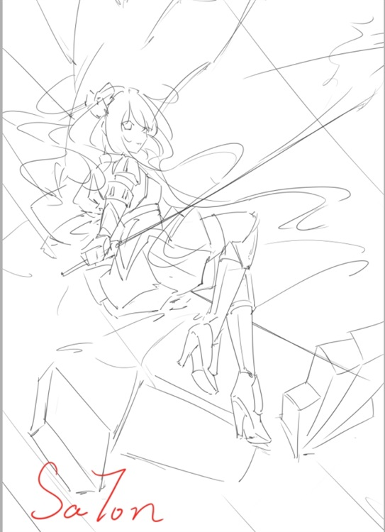
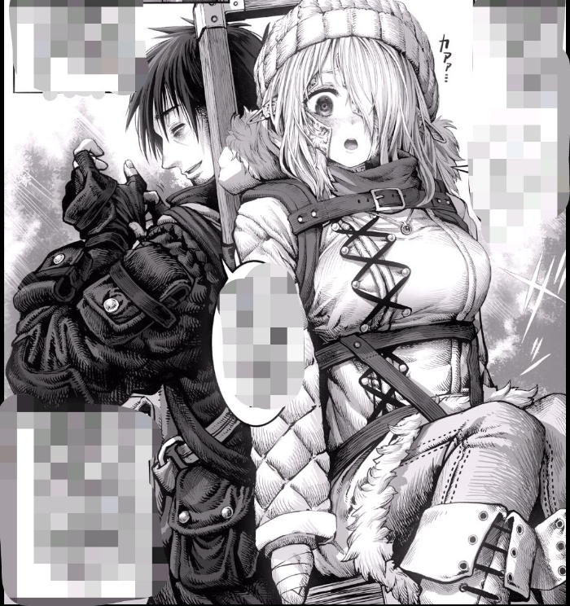

第六章 lsp女骑士
“小砂糖，姐姐我也是骑士团的成员哦。”
“你也是吗？！”
“那当然，我可是第二骑士团游击小队的队长哟，比这个老年痴呆的团长要靠谱多了。”
说完便用脑袋蹭着砂糖脸蛋，做出了像是姐妹之间的亲昵举动。
游击骑士——薇莉娅，外表年龄介于二十到二十五岁之间，眼尾细长的双眸散发犹如高级红酒的醉人光芒，数瓣樱花状的发饰固定在刘海上，赤红发丝被墨黑色的发带约束着绑成了单马尾。
最与众不同的地方莫过于其高雅气质，还有不分男女，任何人都会多看一眼的动人美貌。
全身上下只保护着重要部分的金属甲胄，虽然是平平无奇的制式武装，但穿在她身上就宛如一套精美礼服。

“喂，我说你今天是不是比平时更毒舌了？在小姑娘面前好歹给我留点面子吧。”
“既成事实而已。”
就是这样一个才色兼备的女骑士，却莫名地很黏砂糖，连同僚和长官都很难接近。
而这个内在是打从娘胎起就开始单身的处男，别说和女生有过肢体接触，就连普通的闲聊交谈都屈指可数。
从未体验过这样强烈的刺激，何况对方还是模特级别的美女，根本承受不住。
于是在她怀中努力地挣扎，以试图脱离薇莉娅控制，就为了阻止自己快要暴走的理性。
奈何彼此间的力量天差地别，不管如何扭动身体，在训练有素的女骑士面前都是白费力。
反倒是这一举动令薇莉娅更加使劲了，她那兴奋的表情感觉超级不妙！
“没事的，只要有我在，就绝对不会让团长他们那些肮脏的臭男人碰到小砂糖一根汗毛。”
“等喵~。”
无意间触发了【猫耳的心意】被动，句尾的喵声可谓萌化人心，能让无数死宅原地爆炸。
“小砂糖好可爱！”
好近，来自女性柔软身体的触感、勾人心魄的体香，疯狂折磨着砂糖内部的精神。
简直和拷问无异啊！
“救……”
“年轻真好啊。”
哈？这团长真的老年痴呆吧，到底是怎么得出这种感慨的。
虽然内心暗暗咒骂着，但不知情的外人自然是听不见那来源于灵魂深处的呐喊。
库罗斯没有出手制止的迹象，单纯放任薇莉娅不管。
现场景象从他的视角来观察，就是两个关系要好的美少女在互相嬉戏打闹罢了，所以又有哪个男人能拒绝这心悦神怡的一幕呢？
整个过程大概维持了好几分钟。
直到最终砂糖因为气血上涌，头枕着薇莉娅的胸部晕了过去，闹剧才总算告一段落。
……
…
幽暗的密林中，一支人类小队正穿行其中，为首是全身铠的壮汉，五名和他相似装扮的骑士跟随在身后一同前进。
居于中间位置的一名骑士，背部比其他伙伴多了木头做成的支架，看做工的粗糙程度像是临时组装而成的。
认真审视后，可以发现上面还坐了个娇小的白发美少女，长着猫耳朵，并且被牢牢固定住防止跌落。
也只有她衣着朴素，画风与装备精良的众人显得格格不入。

“小姑娘，从这一带开始就属于森林的外围区域了，就算不舒服也再忍一忍，很快就能出去了。”
骑士们的领队便是魔装第二骑士团团长——库罗斯，他的着装全是重型武器，巨大且厚重的盾牌和阔剑背在背上。
覆面甲虽然可以翻起来，不过考虑身处这片地区的风险，倒是没有掀开头盔。
浑身上下都被结实的装甲包裹，几乎没有露出来的部分。
不知道因为什么理由，除了薇莉娅以外的人似乎更喜欢直接把砂糖叫做小姑娘，说不定是她柔弱的印象激发了这群大叔的父性保护欲。
虽然反复申明了喊名字就好，但库罗斯坚定地表示这样更亲切，死活都不肯改。
“没关系，怪我给你们添麻烦了喵。”
“不需要跟我们客气，保护平民是骑士的职责所在。”
“就是就是，能帮助到小砂糖是这些男人的荣幸，你大可不必介意，尽情地使唤他们也没问题哟。”
“啊这……”
一头猩红的长发随风飘散，银白护甲也略显华丽，两把精致的刺剑悬在腰间。
薇莉娅这身装备只算轻装，但周身散发出的气场却是别人无法相比的，脸因为藏在饰有猛禽双翼的头盔里而看不真切。
以高超的二刀流剑术成就了【剑姬】之名，会使用二刀流的剑士并不稀奇，但她能够脱颖而出的原因之一在于所使用的武器。
普通的剑士都是使用骑士剑或者阔剑，可薇莉娅用的是刺剑。
归属细身剑的一种，舍弃了劈砍功能而特化穿透能力，造型优雅，不过实战性能不佳，往往被当成艺术品来做装饰。
单手刺剑的剑术已经难度极高，很少有人选择，而二刀流刺剑就只有薇莉娅一人能用于战斗，光论剑术才能，她或许要在团长之上。
“俺觉得小姑娘你还是谨慎过头了，这种情况下应该学会多依靠我们大人才对。”
负责背负砂糖行动的骑士隔着面甲的缝隙插话了，他是一开始和薇莉娅照顾她的肌肉大叔，听介绍说叫做阿斯托尔。
“嗯，别看大叔是肌肉脑，他的直觉和判断向来都是正确的。”
“俺寻思俺也不笨呀，莉娅你才是经常犯错的家伙吧。”
“哈~？笨蛋大叔是想打架吗？”
“俺才不要。”
“哼~”
薇莉娅迅速凑到跟前，用带有挑衅意味的语气警告阿斯托尔别再当面乱说话。
砂糖怕因此产生矛盾，所以随便找了个话题分散注意力。
“为什么说这里很危险呢？”
“其实整个森林都是魔女的墓地，留存了大量生性凶残的魔兽。”
“魔兽很厉害吗？”
“只有国家军队和经验老道的冒险者能应付得了。”
“这样啊……”
见她忧心忡忡，薇莉娅温柔抚摸了头顶的猫耳。
“附近已经是森林外围了，除非运气极差，否则不会遇上强大的魔兽了，顶多有狼或蜥蜴什么的。”